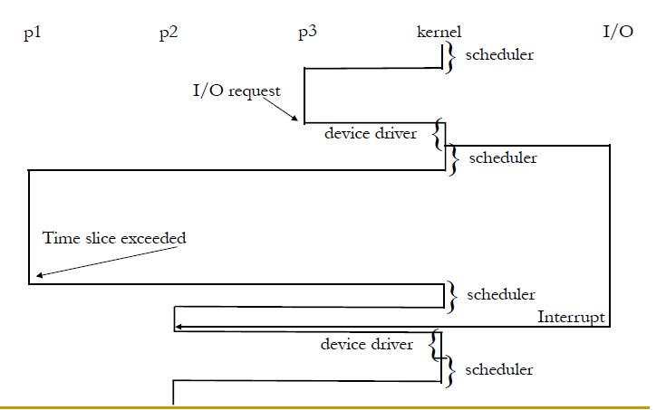

进程
进程就是正在执行的程序。包括程序计数器（PC），寄存器，变量的当前值等。从数据结构上来说，包括代码段（Text），数据段（Data，存储静态变量和全局变量）和堆栈段。
在逻辑上，每个进程都运行在自己的虚拟CPU上，因为我们在编写代码时，并没有考虑进程间的切换，而就认为我们的代码会连续执行，这是计算机中一种重要的抽象。
而在实际物理上，多个进程是通过切换共享物理CPU（为了简单，这里只考虑单CPU情形）。CPU根据时间片（time slides）和某种调度算法来考虑是否该切换进程，但由于在计算机中，时间片一般很短（10ms左右），人类总是感觉计算机是多个程序同时执行，因此才有了多进程的概念。
上下文切换
那么，CPU是如何从一个进程切换到另一个进程的呢？这里涉及到的概念是Context switch。
所谓上下文切换，就是CPU在从一个进程到另一个进程时，需要记下当前进程的状态，然后再运行新的进程，这样，下次就可以直接从之前中断的地方重新运行。这是一种很自然的解决方法。
注意：the time it takes is dependent on hardware support, and the time is overhead; the system does no useful work while switching.
因此，科学家想了很多办法来降低上下文切换中的系统效率损失，在这里不做介绍。
模式切换
模式切换（Mode Switching）是只用户态（user mode）和内核态（kernel mode）之间的切换。因此，我们知道，如果进行了上下文切换，则一定会发生模式切换。而模式切换并不一定意味着上下文切换。请看下面的例子：
 此图中，p3到p2发生的是上下文切换，而p2由于中断信号，交给kernel去处理，处理结束后又回到p2，这就是发生的模式切换。
逻辑程序计数器
每个进程有用自己的逻辑程序计数器，而CPU只有一个物理程序计数器，当进程被运行时，将该进程的逻辑计数器装入物理程序计数器中，而程序暂时中止运行时，将物理计数器中的值保存在该进程的逻辑计数器中。
进程的实现
进程控制块（PCB）
process control block，是由操作系统维护的用来记录进程相关信息的一块内存。
每个进程在OS中的登记表项，OS根据此PCB来对进程进行管理。
PCB位于核心段中，通常不能由应用程序自身的代码来直接访问，需要通过系统调用或UNIX中的进程文件系统（/proc）直接访问进程映像。
PCB中主要包括以下几部分内容：
进程描述信息： process ID、进程名、user ID、process group
进程控制信息 当前状态、优先级、代码执行入口地址、程序的外存地址、进程间同步和通信
资源占用信息 虚拟地址空间的现状、打开文件列表
CPU现场保护结构 寄存器值、PC、栈指针地址等。
PCB的组织方式
- 链表：同一状态的进程使用一个链表。
如就绪链表、阻塞链表 - 索引表：同一状态的进程归入一个索引表，再指向PCB table（更常用）

- 在微内核体系架构中（Minix），这些部分是分模快进行处理，也就是说，进程通讯、内存管理和文件管理是分别的几个数组，使用相同的下标去访问同一个进程的不同信息。
- 在巨内核体系架构中（Linux），所有的信息都储存在同一个数组。